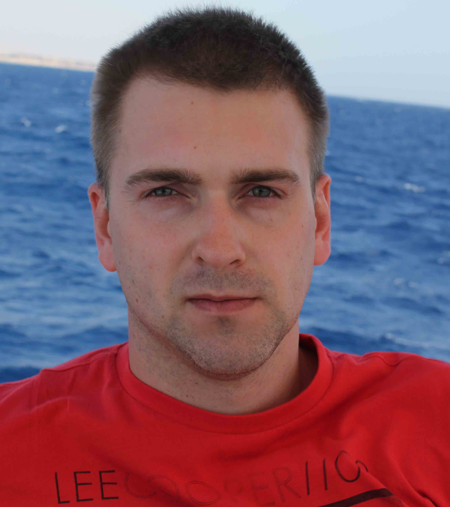
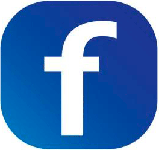

|

|
Фамилия Передерий Имя Вадим Очество Викторович Дат рождения 1986 Адрес г.Запорожье Facebook  |
Передерий Вадим Викторович родился 27 декобря 1986 года — американский инженер, предприниматель, изобретатель и инвестор; миллиардер.Сооснователь компании PayPal; основатель, совладелец, генеральный директор и главный инженер компании SpaceX; генеральный директор и главный идейный вдохновитель (Chief Product Architect) компании Tesla; также был членом совета директоров компании SolarCity, основанной его двоюродными братьями, до её слияния с Tesla. В рейтинге миллиардеров журнала Forbes в 2018 году его состояние оценивалось более чем в $22,5 млрд.
Содержание |